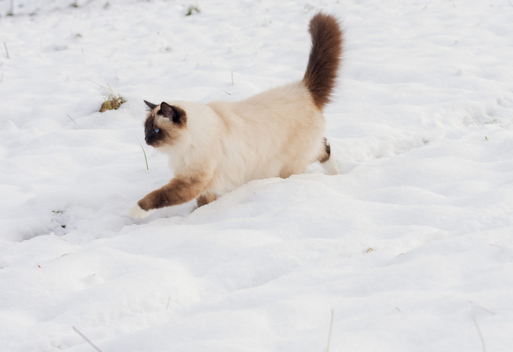
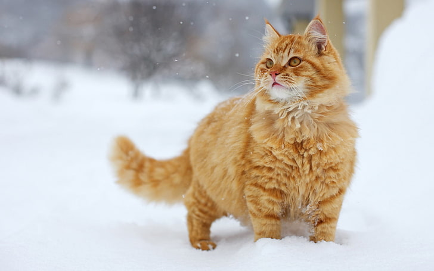
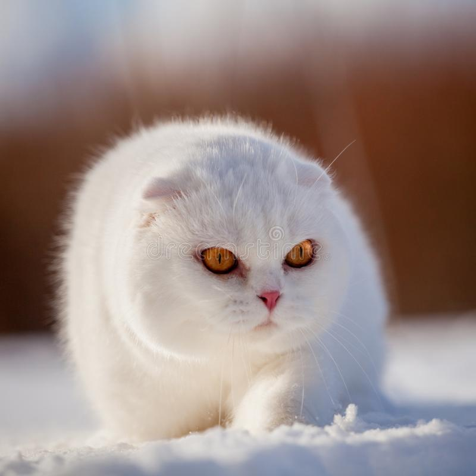

|  | Brittish ShortHair | The British Shorthair is the pedigreed version of the traditional British domestic cat, with a distinctively stocky body, dense coat, and broad face. The most familiar colour variant is the "British Blue", with a solid grey-blue coat, orange eyes, and a medium-sized tail. The breed has also been developed in a wide range of other colours and patterns, including tabby and colourpoint. |
|  | Persian Cat | The Persian cat (Persian: گربه پارسی, romanized: Gorbe'-ye Pârsi), also known as the Persian longhair, is a long-haired breed of cat characterized by a round face and short muzzle. The first documented ancestors of Persian cats were imported into Italy from Persia around 1620. Widely recognized by cat fancy since the late 19th century, Persian cats were first adopted by the British, and later by American breeders after World War II. Some cat fancier organizations' breed standards subsume the Himalayan and Exotic Shorthair as variants of this breed, while others generally treat them as separate breeds. |
|  | Scottish Fold | The Scottish Fold is a breed of domestic cat with a natural dominant gene mutation that affects cartilage throughout the body, causing the ears to "fold", bending forward and down towards the front of the head, which gives the cat what is often described as an "owl-like" appearance. |
The Listed below are links to the wikipedias of the respective cats.
| Brittish ShortHair |
| Persian |
| Scottish Fold |